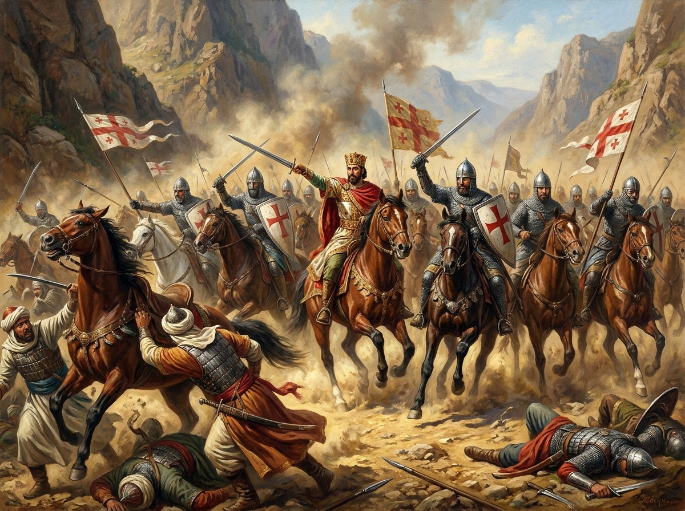

დიდგორის
ბრძოლა
ერთი დღე, რომელმაც გადაწყვიტა საქართველოს ბედი — მცირერიცხოვანმა ქართულმა ჯარმა გაანადგურა მრავალჯერ აღმატებული სელჩუკური კოალიცია.

მოვლენების ქრონოლოგია
ხარკის გადახდაზე უარი
დავითმა შეწყვიტა სელჩუკებისთვის ხარკის გადახდა — პირველი ღია გამოწვევა რეგიონის დომინანტი ძალისთვის.
თანმიმდევრული განთავისუფლება
ქართულმა ჯარმა ეტაპობრივად დაიბრუნა ციხე-სიმაგრეები და ტერიტორიები, სამცხედან კახეთამდე.
დიდი კოალიცია
საქართველოს გაძლიერებით შეშფოთებულმა სელჩუკურმა ძალებმა შეკრიბეს მრავალეთნიკური, მრავალჯერ აღმატებული ლაშქარი საქართველოს დასამორჩილებლად.
დიდგორის ბრძოლა
დავითის რეფორმირებულმა ჯარმა — მუდმივი სამეფო რაზმებით, ყივჩაღური ცხენოსნებითა და მოკავშირეებით — დიდგორის ველზე გადამწყვეტი, სრული გამარჯვება მოიპოვა.
თბილისის განთავისუფლება
დიდგორის შემდეგ დავითმა დაიბრუნა თბილისი — ქალაქი, რომელიც თითქმის ოთხი საუკუნის განმავლობაში მუსლიმური ემირატის ხელში იმყოფებოდა — და დედაქალაქად აქცია.
რატომ იყო ეს გამარჯვება გადამწყვეტი
დიდგორის ბრძოლა მხოლოდ სამხედრო ტრიუმფი არ ყოფილა. მან დაასრულა ნახევარსაუკუნოვანი სელჩუკური ბატონობა და დაუდასტურა რეგიონს, რომ გაერთიანებული, რეფორმირებული საქართველო შეეძლო წინააღმდეგობა გაეწია მრავალჯერ აღმატებულ ძალას.
ბრძოლის შემდეგ საქართველო გახდა კავკასიის წამყვანი პოლიტიკური ძალა, გაფართოვდა მისი გავლენის სფერო, ხოლო თბილისის დაბრუნებამ ქვეყანას საუკუნეების განმავლობაში მისცა ერთიანი, ცენტრალური დედაქალაქი.
.jpg)